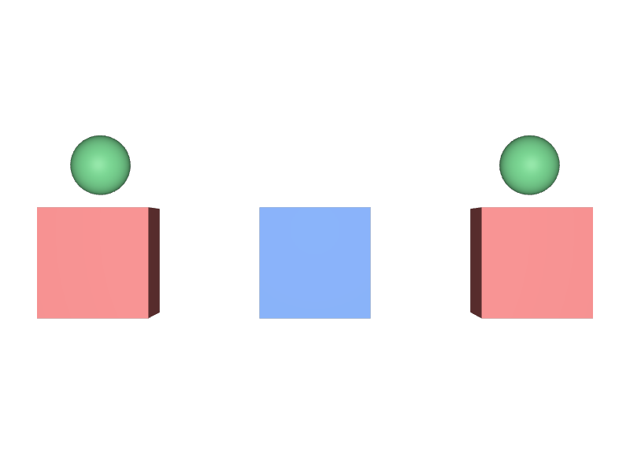
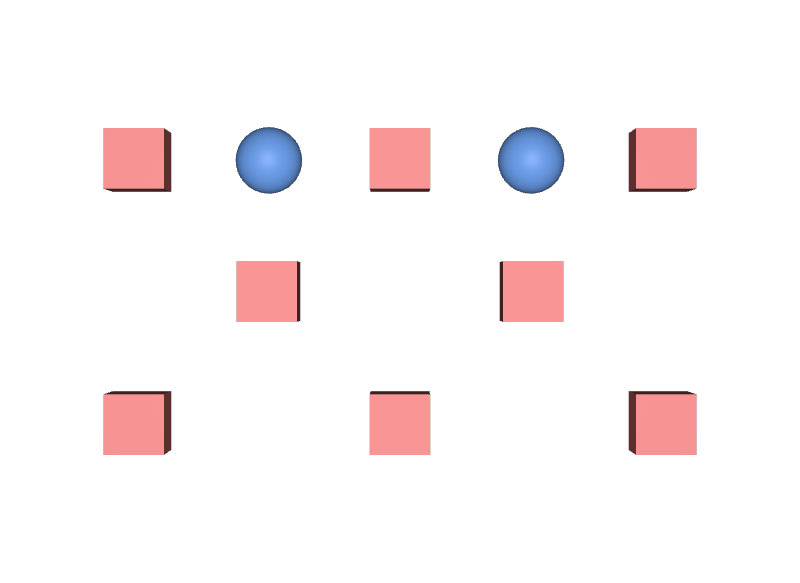

エラーの原因をPathの誤りだと思う
Pathは合っているのに書けない場合、IsInstanceProxy()を確認します。Proxyなら書けないのが仕様です。
STEP 110 · INSTANCING
共有したまま、個体差を付ける方法を選びます
今日これだけ
公式情報に基づく説明
Instanceの内側にあるPrimは、Instance Proxyとして取得できます。Pathを指定して読むことはできますが、そこへ値を書き込むことはできません。中身はPrototypeとして共有されているため、片方だけ書き換えることが原理的にできないからです。個体差を付けたいときは、書ける場所を選び直す必要があります。
確かめる
from pxr import Gf, Usd
stage = Usd.Stage.Open("instanced.usda")
seat = stage.GetPrimAtPath("/World/Chair_1/Seat")
print(bool(seat)) # True … 取得はできる
print(seat.IsInstanceProxy()) # True … ただしProxy
print(seat.GetAttribute("primvars:displayColor").Get())
# [(0.15, 0.35, 0.85)] … 読める
seat.GetAttribute("primvars:displayColor").Set([Gf.Vec3f(1, 0, 0)])
# Error: Usd.Stage._SetValue で失敗する（Instance Proxy へは書き込めない）IsInstanceProxy()がTrueなら、そのPrimは共有された中身の「窓」です。読むだけなら問題ありませんが、書こうとするとエラーになります。
Diagram
USDA
def "Chair_1" (
references = @instance-chair.usda@
instanceable = true
)
{
double3 xformOp:translate = (-2.4, 0, 0)
float xformOp:rotateY = 15
uniform token[] xformOpOrder = ["xformOp:translate", "xformOp:rotateY"]
token visibility = "inherited"
}Instance自身に書いたPropertyは共有されません。位置・向き・大きさ・表示のオンオフは、これだけで個別に指定できます。多くの場合、必要な個体差はここで足ります。
USDA
def "Chair_A" (
references = @instance-chair.usda@
variants = {
string look = "warm"
}
instanceable = true
)
{
}
def "Chair_B" (
references = @instance-chair.usda@
variants = {
string look = "cool"
}
instanceable = true
)
{
}STEP 69 Variantの選択が違えば合成結果が違うため、Chair_AとChair_Bは別のPrototypeになります。10種類あれば10個のPrototypeができますが、1000個並べてもPrototypeは10個のままです。「全部同じ」と「全部バラバラ」の中間を取る、実務でいちばんよく使う方法です。

Aと右Cがlook = "warm"、中央Bがlook = "cool"です。3つともInstanceのまま、見た目に差が付いています。examples/lesson-63/variant-instances.usda / Apple USD Tools 0.25.2 のusdrecord（Hydra Storm・Metal）/ macOS 26.5.2・Apple M4この3つのInstanceが、いくつのPrototypeを共有しているかを確かめます。
from pxr import Usd
stage = Usd.Stage.Open("variant-instances.usda")
print([str(p.GetPath()) for p in stage.GetPrototypes()])
# ['/__Prototype_1', '/__Prototype_2'] … 2種類ぶん
for name in ("A", "B", "C"):
prim = stage.GetPrimAtPath("/World/%s" % name)
print(name, prim.GetPrototype().GetPath())
# A /__Prototype_2 … look = "warm"
# B /__Prototype_1 … look = "cool"
# C /__Prototype_2 … look = "warm"、Aと同じPrototypeInstanceは3つですが、Prototypeは選択の種類数と同じ2つです。同じ選択のAとCはきちんと共有されています。
Python
from pxr import Gf, Usd
stage = Usd.Stage.Open("instanced.usda")
chair = stage.GetPrimAtPath("/World/Chair_1")
print(chair.IsInstance()) # True
chair.SetInstanceable(False) # このPrimだけ共有をやめる
print(chair.IsInstance()) # False
seat = stage.GetPrimAtPath("/World/Chair_1/Seat")
print(seat.IsInstanceProxy()) # False … もうProxyではない
seat.GetAttribute("primvars:displayColor").Set([Gf.Vec3f(0.85, 0.2, 0.2)])
# 書き込める
stage.Save()SetInstanceable(False)を呼ぶと、そのPrimの中身は展開され、通常のPrimと同じように編集できます。ただしその1つ分だけStageが重くなります。少数に限って使う手段です。
逆方向
ここまでは「個体差を付ける」話でしたが、逆に共有している一群を一度に変えたいこともあります。それがBroadcasted Refinementです。Assetにあらかじめ受け口のclassを置いておき、下流のLayerからそこへOpinionを足すと、参照している全Instanceへ一度に届きます。Assetファイルは書き換えません。
受け口を分ければ、対象の群だけに届かせて、その群専用のPrototypeを作ることもできます。詳しくはSTEP 112で扱います。
Point Instancingの場合
STEP 113 Point Instancingで置いたものはPrimではないので、overでは触れません。ただしまったく個体を扱えないわけではありません。idsで番号を振り、その番号で表示を制御できます。
from pxr import Usd, UsdGeom, Vt
stage = Usd.Stage.Open("point-instancer.usda")
pi = UsdGeom.PointInstancer(stage.GetPrimAtPath("/World/Scatter"))
n = len(pi.GetPositionsAttr().Get()) # 15
pi.CreateIdsAttr(Vt.Int64Array(range(n))) # 各配置に番号を振る
pi.CreateInvisibleIdsAttr(Vt.Int64Array([1, 3, 5, 7, 9])) # 5個を隠す
mask = pi.ComputeMaskAtTime(Usd.TimeCode.Default())
print(len(mask), list(mask).count(False)) # 15 5
# 表示ではなく「無かったこと」にする場合
pi.DeactivateId(7)
print(pi.GetPrim().GetMetadata("inactiveIds"))
# SdfInt64ListOp(Explicit Items: [7])
pi.ActivateId(7)
invisibleIdsに5個を指定した結果。配置そのものは配列に残ったまま、描画だけが止まっています。examples/lesson-63/point-invisible.usda / Apple USD Tools 0.25.2 のusdrecord（Hydra Storm・Metal）/ macOS 26.5.2・Apple M4使い分けはSTEP 87 visibilityとactiveと同じ考え方です。invisibleIdsは描画だけを止め、inactiveIds（DeactivateId）は無かったことにします。向きや大きさ、色を配置ごとに変えたいときは、orientations・scalesやprimvarsを同じ長さの配列で持たせます。できないのは「Pathで指してoverで編集する」ことだけです。
USDA → Python mapping
やりたいこと
Proxyかどうか調べる↓Python
prim.IsInstanceProxy()やりたいこと
Instanceの内側も走査する↓Python
stage.Traverse(Usd.TraverseInstanceProxies(Usd.PrimDefaultPredicate))やりたいこと
共有をやめる↓Python
prim.SetInstanceable(False)Beginner notes
よくある間違い
Pathは合っているのに書けない場合、IsInstanceProxy()を確認します。Proxyなら書けないのが仕様です。
Instancingの利点が失われます。まず外側で足りないかを確認し、次にVariantで種類を分けます。
Prototypeは自動生成されたもので、編集の対象ではありません。書くのは元になったアセット側です。
Instance Proxyは既定の走査から外れているだけです。
Glossary
instanceableを外し、そのPrimの中身を個別に持たせること。Official references
確認日: